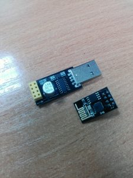
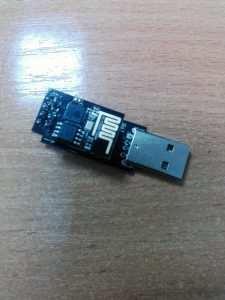
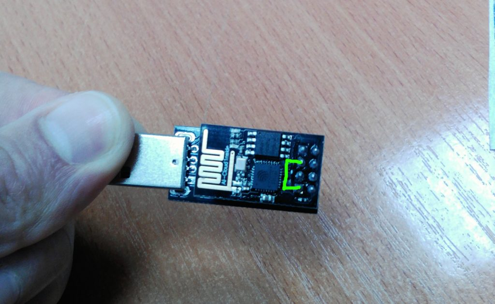

Загрузка прошивки NodeMCU на ESP8266 (OS Linux) Часть 1
Попробую кратко описать процесс заливки в ESP8266 прошивки NodeMCU в OS Linux Debian
ESP8266 тут
USB Adapter UART GPIO0 ESP-01 тут
 
Начнем !
Собственно нам понадобиться прошивка NodeMCU скачиваем
P.S можно посетить сайт разработчиков прошивки http://nodemcu.com
Инструмент с помощью которого будем загружать прошивку. Я выбрал пакет esptool скачиваем
Для загрузки прошивки придется замкнуть контакты на ESP8266

После того, как мы подготовили ESP8266 к прошивке, открываем терминал. В терминале переходим в папку с esptool и вводим эту команду, чтобы залить прошивку:
python esptool.py —port /dev/ttyUSB0 write_flash 0x00000 путь к прошивке NodeMCU_Firmware.bin
Обратите внимание на порт устройства /dev/ttyUSB0 (выполнив команду в терминале tail -f /var/log/messages) он может быть другим в разных дистрибутивах linux.
собственно далее наблюдаем сам процесс
Connecting... Erasing flash...
Writing at 0x00000000... (0 %)
Then everything is OK..